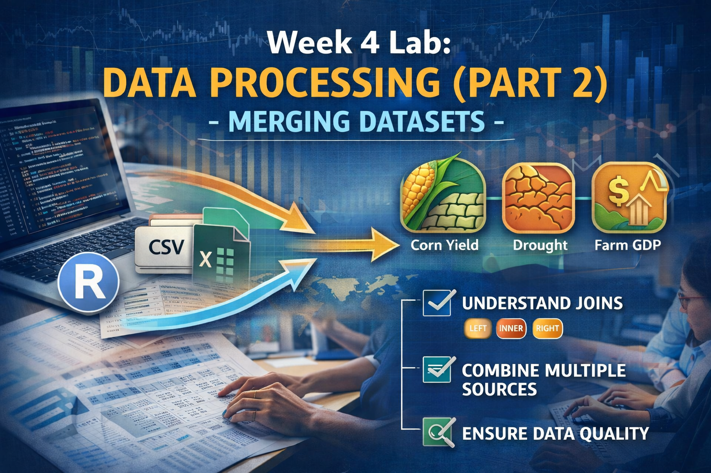
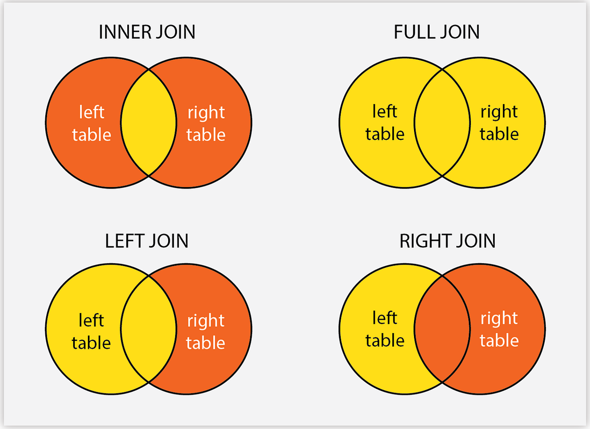

library(tidyverse)
library(lubridate)Week 4 Lab: Data Processing (Part 2) - Merging Datasets

This lab builds on last week’s data processing work by introducing you to merging datasets—a critical skill for combining information from multiple sources. You’ll start with a recap of cleaning and preparing the BEA farm GDP data, then merge it with the corn yield and drought datasets you worked with in Lab 3. By the end, you’ll have a unified dataset ready for analysis.
Learning Objectives
By the end of the lab, you will be able to:
- Understand different types of joins (
left_join,inner_join) and when to use each - Merge multiple datasets based on common key variables
- Diagnose and troubleshoot merge issues (mismatched keys, duplicate rows)
- Validate the integrity of merged data
- Create a final analytical dataset combining economic, agricultural, and drought data
Preliminaries
- Create a folder called
lab_04and navigate there in RStudio. - Create a new R script called
lab_04.Rin yourlab_04folder. - Write a brief comment at the top describing the purpose of the script and your name.
- Load required libraries at the top:
Lab Notebook
Open up a word processing document (e.g., Google Doc, Word, or plain text) to serve as your lab notebook. Use this to respond to questions, document decisions, and reflect on the process. You should also comment your R script thoroughly to explain your code and rationale for each step.
Section 1: Recap and Data Preparation
Context
Last week, you worked with corn yield and drought data, learning to handle missing values, reshape untidy data, and aggregate time-series observations. This week, we’re adding a third dataset: Farm GDP from the Bureau of Economic Analysis (BEA).
The BEA data measures the economic value of agricultural production by state and year. Merging farm GDP with yield and drought data will let you explore questions like: How does drought affect not just crop yields, but also farm economic output?
But first, we need to prepare the BEA data for merging. Real datasets rarely arrive in analysis-ready form, and the BEA data is no exception - it’s in “wide” format with years as columns.
Data
The file BEA_farm_gdp_2000-2024.csv contains farm GDP (in millions of current dollars) for each state from 2000 to 2024. Download it or load it directly from the course repository.
Task 1.1: Load and Inspect the BEA Data
# Read the BEA farm GDP data
bea_raw <- read_csv("https://jbayham.github.io/arec-330/modules/04_data_processing2/includes/BEA_farm_gdp_2000-2024.csv")
# Inspect the structure
glimpse(bea_raw)Question 1: What makes this data “untidy”? How many columns represent years? What challenges does this structure create for merging with other datasets? Answer in your notebook.
Task 1.2: Reshape BEA Data from Wide to Long Format
To merge with our corn yield and drought data (which are in tidy, long format with one row per state-year), we need to pivot the BEA data from wide to long. Name the new year column year and the farm GDP column farm_gdp.
Task 1.3: Clean and Select Relevant Variables
There are a few columns that we need to modify to make them compatible with our other datasets. First, we need to ensure the year variable is numeric (not character) for merging. Use the function as.numeric() to convert the year column. Think about the dplyr verb you would use to transform the year variable. Second, the column CL_UNIT indicates that the values are in millions of dollars, but we want to convert them to actual dollars for easier interpretation. Use the appropriate dplyr verb to create a new column farm_gdp that contains the farm GDP in dollars (not millions).
Question 2: Why is it important to convert year to numeric before merging? What problems might arise if we left it as a character variable? Answer in your notebook.
The BEA data has several columns we don’t need for our analysis. Keep only the following columns:
state_abr(state abbreviation)year(after conversion to numeric)farm_gdp(after conversion to dollars)
Ensure the final dataset is called bea_final and is in tidy format with one row per state-year.
Section 2: Preparing Corn Yield and Drought Data
Before we can merge all three datasets, we need to load and prepare the corn yield and drought data from last week. This is a quick recap to ensure everyone starts from the same place.
Task 2.1: Load and Prepare Corn Yield Data
Read in the corn yield data corn_yield_2000-2025.csv. Select only the relevant columns (state_alpha, year, and Value), and rename Value to yield_bu_per_acre for clarity. The dplyr function rename() allows you to change the name of a column. The syntax is rename(new_name = old_name). Use this function to rename the Value column to yield_bu_per_acre. Store the cleaned dataset in a new object called corn_clean.
Task 2.2: Load and Prepare Drought Data
Recall from last week that we calculated the Drought Severity Composite Index (DSCI) and aggregated weekly drought data to annual values. Either load the processed drought data from last week or repeat the steps to calculate DSCI and aggregate to annual level. The key variables to keep are StateAbbreviation, year, and mean_dsci (the average DSCI for each state-year). Call the resulting dataset drought_annual.
Question 3: Before proceeding to merging, identify the key variables in each dataset that we’ll use to match rows across datasets. What variables do all three datasets have in common? Answer in your notebook.
Section 3: Understanding Joins
Before merging our datasets, we need to understand different types of joins and when to use each one. Joins combine datasets based on shared “key” variables.
Types of Joins
Left Join
- What it does: Keeps all rows from the “left” (first) dataset and adds matching rows from the “right” (second) dataset.
- When to use: When you want to preserve all observations from your primary dataset, even if they don’t have matches in the secondary dataset.
- Result: Rows from the left dataset without matches will have
NAvalues for variables from the right dataset.
Inner Join
- What it does: Keeps only rows that have matches in both datasets.
- When to use: When you only want complete cases where data exists in both sources.
- Result: Smaller dataset; only observations present in both datasets are retained.
Right Join
- What it does: Opposite of left join. It keeps all rows from the right dataset.
- When to use: Less common; usually you can rearrange datasets and use left join instead.
Full Join (Outer Join)
- What it does: Keeps all rows from both datasets, filling in
NAwhere matches don’t exist. - When to use: When you want the complete picture and don’t want to lose any observations.

Question 4: Suppose you have state-year corn yield data (2000-2025, all states) and you merge it with BEA farm GDP data (1997-2024, all states). If you use a left join with corn yield as the left dataset, what will happen to years before 2000 in the BEA data? What about years 2000-2024? Answer in your notebook.
Section 4: Merging the Datasets
Now we’re ready to combine our three datasets. We’ll merge step by step, validating each merge before proceeding to the next.
Task 4.1: Merge Corn Yield and Drought Data
First, let’s merge corn yield with drought data. Notice that the state abbreviation variable has different names in each dataset: state_alpha in corn data and StateAbbreviation in drought data. The by argument in join functions allows you to specify how to match variables with different names. The syntax is by = c("left_var" = "right_var"). Use this syntax to specify the correct matching variables for the merge. If the left and right datasets have columns with the same name that you want to match on, you can simply use by = "variable_name" without needing to specify the left and right variable names separately.
# First merge: corn yield + drought
# Use inner_join to keep only states/years present in both datasets
corn_drought <- inner_join(
corn_clean,
drought_annual,
by = c("state_alpha" = "StateAbbreviation", "year" = "year")
)
# Inspect the result
glimpse(corn_drought)
head(corn_drought, 10)
# Check dimensions
cat("Corn rows:", nrow(corn_clean), "\n")
cat("Drought rows:", nrow(drought_annual), "\n")
cat("Merged rows:", nrow(corn_drought), "\n")Question 5: How many observations are in the merged corn_drought dataset? Did we lose any observations compared to the original corn yield dataset? Why or why not? (Hint: Think about which states grow corn vs. which states have drought data.) Answer in your notebook.
Task 4.2: Validate the First Merge
Before proceeding, let’s check for any issues:
# Check for missing values in key variables
summary(corn_drought)
# Verify no duplicate state-year combinations
corn_drought %>%
count(state_alpha, year) %>%
filter(n > 1)Question 6: What would it mean if we found duplicate state-year combinations? What problems could this cause for analysis? Answer in your notebook.
Task 4.3: Merge with BEA Farm GDP Data
Now let’s add the BEA farm GDP data to our corn-drought dataset.
# Second merge: add BEA farm GDP
# Use left_join to keep all corn-drought observations
# and match BEA data where available
final_data <- left_join(
corn_drought,
bea_final,
by = c("state_alpha" = "state_abr", "year" = "year")
)
# Inspect the result
glimpse(final_data)
head(final_data, 15)
# Check dimensions
cat("Corn-drought rows:", nrow(corn_drought), "\n")
cat("BEA rows:", nrow(bea_final), "\n")
cat("Final merged rows:", nrow(final_data), "\n")Question 7: Why did we use left_join() for this merge instead of inner_join()? What would happen if we had used inner_join()? Answer in your notebook.
Task 4.4: Inspect Missing Values
Let’s check for missing farm GDP values, which might indicate states in our corn-drought data that don’t have matching BEA data.
Task 4.5: Create a Complete Cases Dataset
For some analyses, you might want a dataset with no missing values. Let’s create a “complete cases” version. We will use the filter() function to keep only rows where yield_bu_per_acre, mean_dsci, and farm_gdp are not missing. The syntax is filter(!is.na(variable_name)). Use this syntax to filter out rows with missing values in the key variables. The ! operator negates the condition, so !is.na(variable_name) keeps rows where the variable is not missing. Store this complete cases dataset in an object called final_data_complete.
# Remove rows with any missing values
final_data_complete <- final_data %>%
filter(!is.na(yield_bu_per_acre),
!is.na(mean_dsci),
!is.na(farm_gdp))
# Compare dimensions
cat("Full dataset:", nrow(final_data), "\n")
cat("Complete cases:", nrow(final_data_complete), "\n")
cat("Removed:", nrow(final_data) - nrow(final_data_complete), "\n")Task 4.6: Export the Final Dataset
Save your merged dataset for future analysis.
# Export to CSV
write_csv(final_data, "corn_drought_gdp_full.csv")
write_csv(final_data_complete, "corn_drought_gdp_complete.csv")Question 8: Explain how the question we posed initially guided out data processing and merging decisions. Now that we have a merged dataset, what types of analyses could we conduct to explore the relationship between drought, corn yield, and farm GDP? Answer in your notebook.
Deliverables
Submit the following on Canvas:
log file (
lab_04.log): Organize your code and make sure it runs without errors. Generate a log file calledlab_04.logusing the sink-source-sink pattern from previous labs. The log file should include all the code you wrote for this lab, along with comments explaining each step.Lab Notebook: Compile your answers to all 8 questions in a single document (e.g., Google Doc, Word, or PDF). Make sure to clearly label each question and provide thoughtful, detailed responses based on your analysis.